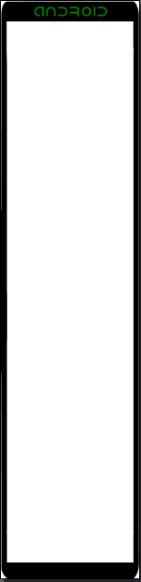
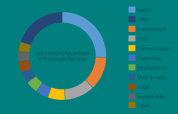
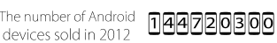
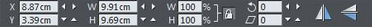
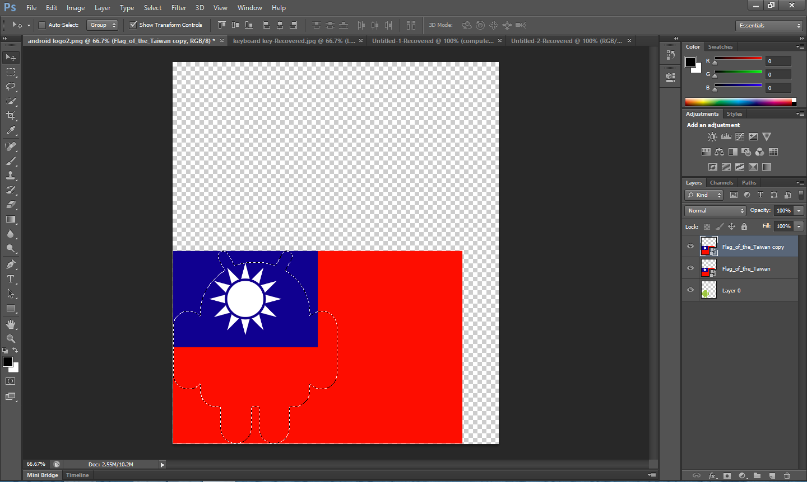
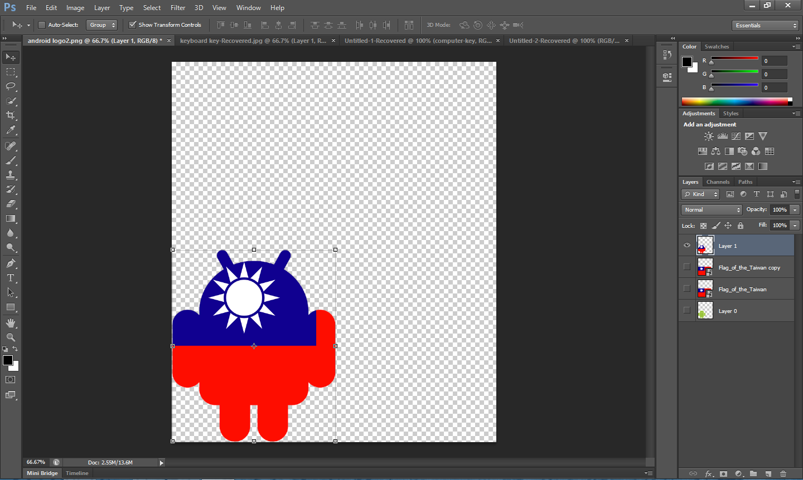
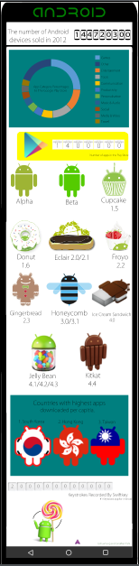
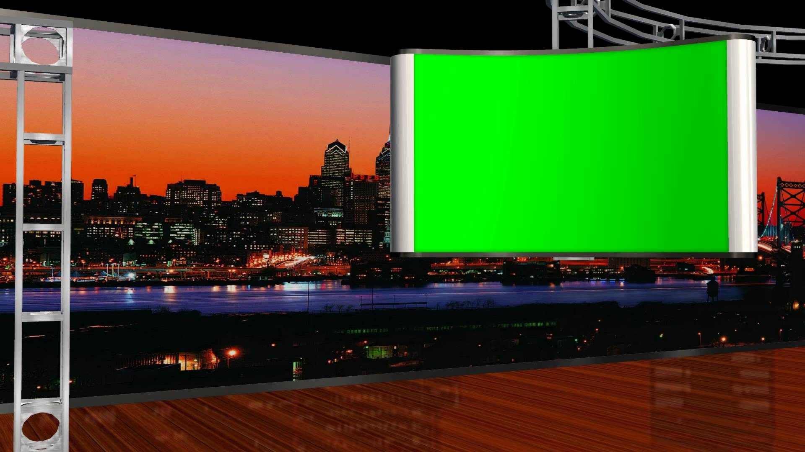

Applications used
Xara Photo and Graphic Designer |
Adobe Illustrator  |
Adobe After Effects |
|---|
This page documents my work done through out the process of this project.
Xara Photo and Graphic Designer |
Adobe Illustrator |
Adobe After Effects |
|---|
After thinking about the topic for a while I decided to choose to do an infographic on Android. I did some intial research and afterwards I created a google document with some facts. Some of the intresting facts I found were: Games account for 25% of all apps on the Google Play Store, More than 12 billion miles are covered on Google Maps yearly.
After thinking about how I could design my infographic, I decided that it would be a good idea if I put the content of the infographic inside the screen of a phone. In order to do this, I used an image of a generic phone, then used Adobe Illustrator to help me automatically trace around it to turn it into a vector graphic eliminating the problem of using a low resolution image for such a large area on the screen. Also changing the image to a vector allows it to use much less space when compared to a conventional image. One of the only downfalls of using vector graphics is the fact that vector graphics are unable to reproduce images with many unique colours, meaning that vector graphics are best for single colour images or logos.
The image trace tool in Adobe Illustrator.  |
Infograph outline.  |
|---|
After completing the outline for the infographic I began to start producing media to place inside of the infographic. Most of the media I created was making figures and amounts more visually appealing. One example of this was putting icons of the Google Play Store around each digit of the number of apps on the Google Play Store. I did this in Xara by finding an empty Google Play Store icon and copying and pasting it multiple times until I had enough of the icons to type each digit into. I used this same technique with other figures but used different icons instead. I also had some data about how much each app category takes up in the Google Play Store which was expressed in percentages, to make this data more visually appealing I used Excel and inputted the data into a spreadsheet to create a pie chart of the percentages. To make the pie chart look better I placed it inside Xara and used the shape tool to create a white circle in the middle of the pie chart to make it look like a donut. I also used logos of versions of Android and turned them into vector graphics using Adobe Illustrator using the same method as last week.
Piechart.  |
Number of Android Devices.  |
|---|
After finishing the creation of all my media I began to place the media around the infographic. I placed down the media and included some text with it. I used the positioning tools to ensure that all of my media was placed equally. I used the X and Y function on the movement toolbar to ensure that my media was on the same level so that it looked equal. This helped me make the infographic look a bit better. I also used the height and width function to make my logos and icons the same size. I also grouped some of the stuff together to make it more easy to move it around. I also used Photoshop to create an Android logo with the flag of Taiwan as the overlay. I did this by placing an image of the Android logo in photoshop, then I put a photo of the flag of Taiwan on top of the Android logo on a seperate layer. Afterwards I selected the pixels of the Android logo and then used the keyboard shortcut Ctrl+J to 'cookiecut' the flag on to the Android logo.
The Xara movement tools  |
Before  |
After  |
|---|
After completing my infographic I decided to implement an Aurasma to make the infographic more interactive. Aurasma is a virtual reality application that can be used on smart phones. I first chose my trigger image which trigers the virtual overlay. The trigger image I chose an Android logo that was modified so that I didn't look exactly the same as the standard Android logo. I then created a video of myself which was used as the virtual overlay. I first filmed myself on the greenscreen talking about the newset version of Android. Afterwards I chose a green screen background to use to replace the green screen. I then replaced the screen of the television in the greenscreen background with some text that said Android. I used Adobe After Effect's keylight plugin to replace the green screen with the background I chose. After completing my video I rendered it and used it as my Aurasma overlay. I then placed the same trigger image into my infographic and then tested out my Aura with my phone and it worked quite well.
My final product.  |
Greenscreen background  |
Aurasma Video |
|---|